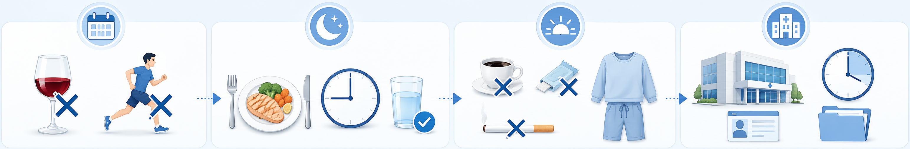
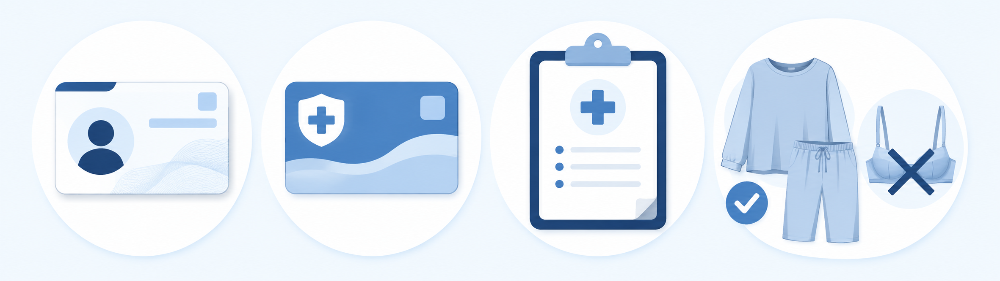
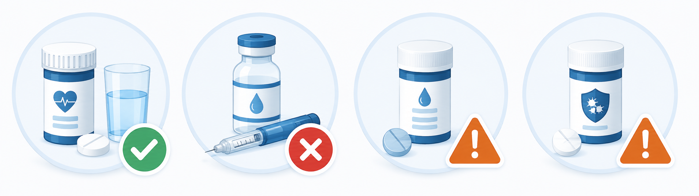

D-3 · 3일 전
D-1 · 전날
D-Day · 당일 아침
도착 · 30분 전
검사 종류별 금식 시간 (Fasting Hours)
공복혈당 (FBG)
8
시간 이상 (물 OK)
중성지방 (TG)
9~12
시간 (지질 패널)
위내시경 (EGD)
8
시간 절대 금식 (물 X)
도착 시각
30
분 전 도착 권장
시간대별 준비사항 (Timeline Checklist)
3일 전 ~ 전날 · BEFORE

- 1. 과음 금지 (3일 전~) — 간수치(AST/ALT)·TG 상승
- 2. 격렬한 운동 자제 — CK·LDH 왜곡, 산책은 OK
- 3. 전날 저녁 9시 이후 금식 — 죽·미음 권장
- 4. 기름진 음식·과식 피하기
- 5. 충분한 수면 7h + 카페인↓
검진 당일 아침 · DAY OF

- 1. 물·음식·커피·껌·흡연 금지 — 검사 직전까지
- 2. 편한 옷차림 — 금속 단추·와이어 X (X-ray)
- 3. 신분증 + 건강보험증 — 본인 확인 필수
- 4. 이전 검진 결과지 — 비교 판독에 유용
- 5. 복용 약 목록 + 안경 도수 적어 오기
약 복용 & 내시경 추가 준비 (Medication & Endoscopy)
약 복용 가이드 · MEDICATION HOLD

- 1. 혈압약 (BP meds) — 소량 물과 복용 OK (사전 문의)
- 2. 당뇨약·인슐린 — 당일 아침 금지 → 식사 후 복용
- 3. 항응고제 (Warfarin·NOAC) — 사전 상담 필수
- 4. 항혈소판제 (Aspirin·Plavix) — 처방의 협의 (자가 중단 금지)
내시경 추가 준비 · ENDOSCOPY PREP

- 1. 위내시경 (Gastroscopy) — 8시간 이상 절대 금식
- 2. 안약·렌즈·의치 — 수면(진정) 내시경 시 제거
- 3. 대장내시경 (Colonoscopy) — 별도 장정결제 안내 따름
- 4. 진정 내시경 후 운전 금지 — 보호자 동행 권장
검진 후 주의사항 & 문의 · AFTER-CARE
진정 내시경 후 당일 24시간 운전·기계 조작 금지,
조직검사(biopsy) 시 당일 음주·격렬한 운동·뜨거운 음식 피하세요.
첫 식사는 죽·미음, 당뇨약/인슐린은 식사 후 복용. 결과지 1~2주 후 발송. 문의 ☏ 031-893-4560.